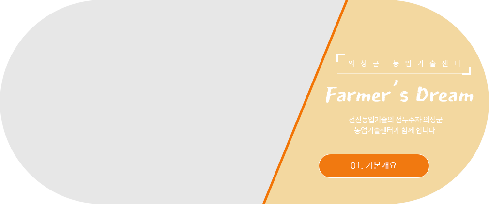

책으로 소통하는 행복한 도서관 의성군립도서관 Uiseong County Library

센터소개

기본개요

명칭
의성농업대학
설립이념
- 의성농업의 미래를 선도하는 정예농업인력 양성
- 「활력 넘치는 희망 의성 의성농업대학은 의성의 미래를 봅니다.」
목적
미래 의성농업을 이끌어갈 유능한 농업인을 선발하여 집중교육으로 지역의 리더(Leader) 및 과학영농실천능력을 갖춘 최고수준의 농업전문 인력을 체계적으로 양성하여 의성농업의 경쟁력 강화.
추진방향
- 가. 의성 농특산물의 브랜드화
- 나. 품목별 전문농업경영인으로 기업가적 마인드 교육
- 다. 교육기간은 월 2~3회 이상(회당 4시간이상) 100시간 이상 편성
- 라. 지역 특화품목 중심의 체계적인 심화전문교육
- 마. 농업인의 애로 및 요구에 맞는 맞춤형 교육
- 바. 이론과 실기 실습을 병행하여 교육 효과 제고
- 사. 엄격한 학칙 운영
- 아. 본 과정 이수자에 대한 인센티브 부여
설치개요
- 가. 조직(가구)
-
학장 군수
부학장 농업기술센터소장
- 교 무 부
-
- 교무부장 - 농촌지도과장
- 교무과장 - 교육경영계장
- 교무담당 - 농업대학담당자
- 교 수 부
-
- 교수부장 - 기술보급과장
- 교수과장 - 경제작물계장
- 교수과장 - 과수기술계장
- 나. 장소 : 의성군농업기술센터
- 다. 과 정 별 : 3개 과정 (마늘, 복숭아, 사과)
- 라. 인 원 : 120명(과정별 각 40명)
- 마. 교육기간 : 2018년 3월 ～ 11월
교육기간 중 28회 수업 - 1회 4시간 이상(총 120시간)